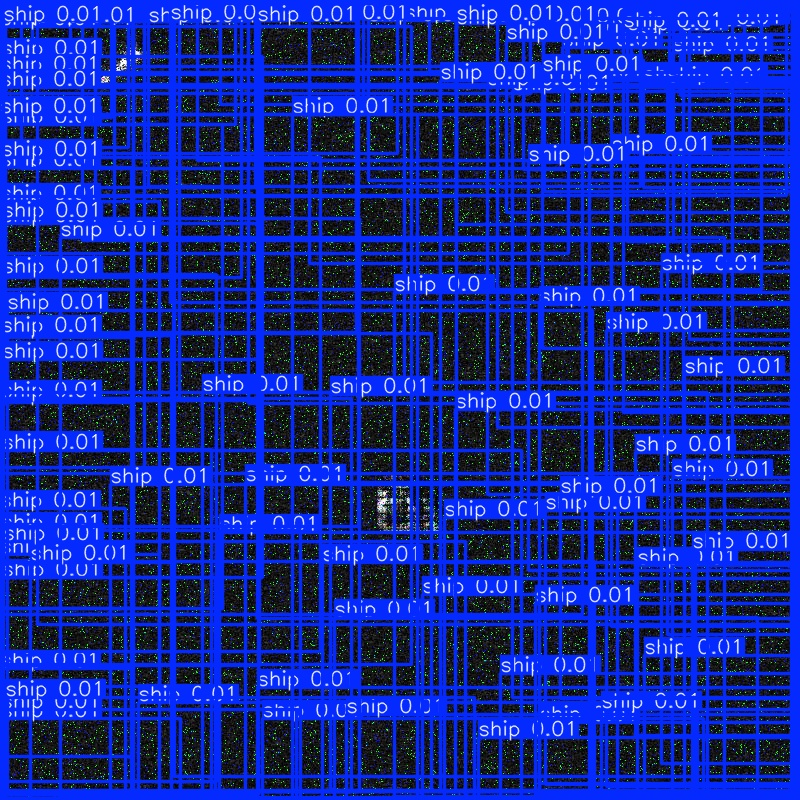
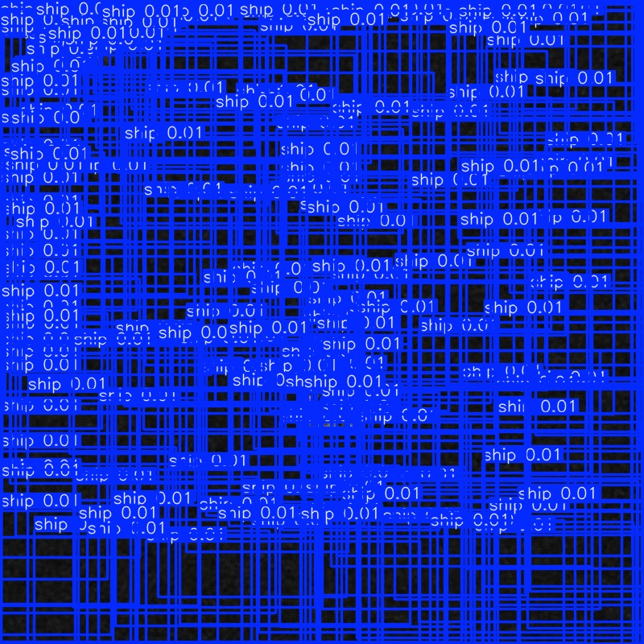

SAR Ship Detection Pipeline
Cosmix The Boogiemen
An Explainable, Defended, Edge-Deployed Radar Target Protocol
The Challenge
- SAR Imagery is notoriously noisy, saturated with speckle artifacts and false scatterings.
- Target Obfuscation: Small ships blend into background ocean clutter.
- "Black Box" Models: Operators cannot blindly trust AI targeting without understanding *why* a ship was flagged.
- Vulnerability: Typical neural networks collapse helplessly when adversarial noise is injected over the grid.
Phase 1 & 2: Bulletproof MVP & GAN Engine
We built a robust YOLOv8-nano detection core.
- Dataset Generation: Programmatic translation of COCO JSON to normalized YOLO.
- Generative Attack: Built a PyTorch Deep Convolutional GAN (DCGAN) to synthesize raw 64x64 adversarial ship footprints.
- Training Enhancement: Seamlessly injected these synthesized chips into the base data fold to artificially stretch the dataset fidelity.
Phase 3: Concept-Based Explainability
We stripped away the "Black Box" to give humans operators real metrics.
- Extracts Radar Cross-Section Intensity (RCS) of targets.
- Measures Laplacian Edge Sharpness to verify structural density.
Phase 4: Zero-Server WebAssembly
We bypassed entire GPU clouds by squashing the neural net.
- ONNX Flattening: Converted our trained `best.pt` into an agnostic `.onnx` standalone graph.
- WebAssembly Runtime: Utilized `onnxruntime-web` to execute the raw graph via client CPU inside the browser.
- Glassmorphism Edge Node: Developed a sleek HTML/JS frontend architecture that requires strictly zero backend execution layers.
Phase 5: Adversarial Defense Filter
We instituted a protective spatial shield prior to inference block execution.

Undefended Network Collapse

Adaptive Spatial Filtering Restoration
Phase 6: Sentinel Scale Inference
We pushed our nano model seamlessly across massive satellite arrays.
- 800x800 tiling sliding windows with 100-pixel overlaps.
- Global Non-Maximum Suppression (NMS) stitching algorithm.
- Total bypass of memory starvation on dense multi-gigabyte matrices.
Experience it Live! 🚀
Our Zero-Server Edge MVP is deployed locally to WebAssembly.
Launch Interactive MVP Terminal
Thank You!
Cosmix The Boogiemen Hackathon Project